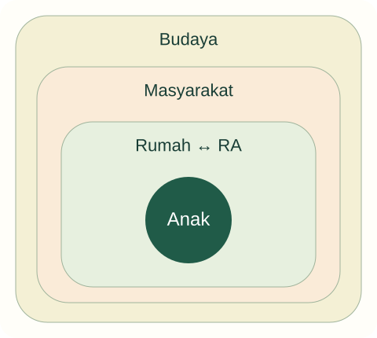

Tujuan pembelajaran
- Menjelaskan pendidikan formal, nonformal, dan informal.
- Menganalisis hubungan keluarga–sekolah melalui perspektif ekologis.
- Menyusun komunikasi yang berbasis pengamatan dan menghargai keluarga.
Mengapa perilaku anak dapat berbeda antara rumah dan sekolah?
Anak berbicara lancar dalam bahasa daerah di rumah, tetapi jarang berbicara di RA. Guru menyimpulkan keluarga kurang menstimulasi. Orang tua merasa anak tidak diberi kesempatan menggunakan bahasa yang dikenalnya.
Temukan persoalan konseptual
Sebelum membaca penjelasan, pisahkan kejadian yang dinyatakan dalam kasus dari dugaan Anda. Gunakan pertanyaan berikut untuk menyiapkan analisis.
- Apa tujuan pendidikan yang sedang dipertaruhkan?
- Pengalaman apa yang dialami anak, dan informasi apa yang belum tersedia?
- Konsep atau jenis sumber apa yang diperlukan untuk menilai tindakan pendidik?

Jalur dan lingkungan pendidikan
UU 20/2003 membedakan jalur formal, nonformal, dan informal. Keluarga, satuan pendidikan, serta masyarakat memberikan pengalaman yang dapat saling melengkapi. Namun, jalur pendidikan adalah kategori penyelenggaraan, sedangkan lingkungan menunjuk konteks hubungan dan pengalaman. Keduanya tidak selalu dapat dipetakan secara satu lawan satu.
Anak dapat mengalami pembelajaran di rumah melalui percakapan keluarga, kegiatan keagamaan di masyarakat, serta program pada lembaga formal. Kualitas pengalaman tidak ditentukan hanya oleh jalurnya. Pertanyaan pedagogisnya ialah kesempatan apa yang tersedia dan bagaimana hubungan antarlingkungan mendukung anak.
Perspektif ekologis
Bronfenbrenner (1979) menjelaskan perkembangan dengan memperhatikan hubungan manusia dan lingkungan. Kerangka ekologis membantu melihat lingkungan terdekat, hubungan antarlingkungan, serta pengaruh konteks yang lebih luas. Untuk mata kuliah ini, gunakan kerangka tersebut sebagai alat memetakan situasi, bukan sebagai klaim bahwa satu faktor pasti menyebabkan perilaku tertentu.
Pada kasus bahasa, hubungan rumah dan RA penting. Jadwal kerja orang tua, bahasa kelas, respons teman, dan kebiasaan guru dapat memengaruhi kesempatan berbicara. Guru memerlukan informasi dari beberapa situasi sebelum menyimpulkan ada masalah pada anak atau keluarga.
Komunikasi yang menghargai keluarga
Komunikasi sebaiknya dimulai dari deskripsi khusus: pada kegiatan bercerita anak lebih sering menunjuk daripada berbicara. Lanjutkan dengan pertanyaan terbuka tentang pengalaman di rumah. Hindari pernyataan keluarga tidak peduli hanya karena tidak hadir pada rapat. Ketidakhadiran dapat terkait pekerjaan, transportasi, atau bentuk komunikasi yang kurang terjangkau.
Usulan praktik: sepakati satu tujuan sederhana dan saluran komunikasi yang memungkinkan. Guru dapat mengenalkan beberapa kata yang akrab bagi anak, sedangkan keluarga memberi informasi minatnya. Kerja sama tidak mengharuskan semua keluarga mengikuti satu pola partisipasi yang sama.
Komunitas dan layanan terpadu
Perpres 60/2013 memberi dasar pengembangan AUD holistik-integratif. Dalam praktik pendidikan, guru perlu mengenali kapan dukungan melibatkan keluarga dan layanan lain. Pendidik dapat menyampaikan pengamatan, membantu koordinasi sesuai prosedur, dan menjaga kerahasiaan; ia tidak mengambil peran diagnosis di luar kompetensinya.
Mahasiswa dapat membuat peta sumber dukungan di lingkungan lembaga: layanan kesehatan, kegiatan perpustakaan, ruang bermain, dan komunitas. Peta itu harus diperiksa keberadaannya sebelum disebut tersedia. Tujuannya memahami tanggung jawab bersama, bukan memindahkan semua masalah kepada orang tua.
Kembali ke kasus
Perbedaan bahasa dan situasi merupakan penjelasan yang perlu diperiksa. Tidak cukup bukti untuk menuduh keluarga kurang menstimulasi. Langkah awal adalah mendengar informasi rumah, mengamati konteks kelas, dan membuka jalur partisipasi yang lebih akrab.
Analisis ini merupakan contoh penalaran pedagogis. Pada situasi nyata, keputusan memerlukan informasi tentang anak dan konteks lembaga.
Latihan terbimbing
Tulis ulang pesan “anak Ibu tidak aktif” menjadi pesan berbasis fakta. Gunakan urutan: situasi, perilaku teramati, pertanyaan kepada keluarga, dan usulan kecil yang dapat ditinjau bersama.
Latihan mandiri
Buat peta tiga lingkungan seorang anak rekaan. Jelaskan satu hubungan yang mendukung dan satu yang menghambat partisipasi. Usulkan komunikasi tanpa menyalahkan pihak tertentu.
- Konsep digunakan dengan tepat dan dijelaskan hubungannya dengan kasus.
- Fakta dipisahkan dari interpretasi; sumber mendukung jenis klaimnya.
- Tindakan konkret, menghargai anak, dan memiliki cara peninjauan.
Lihat pembahasan
Menggali informasi dari rumah dan mengamati hambatan partisipasi di kelas.
Informasi lintas konteks dibutuhkan sebelum mengambil kesimpulan. Guru tidak mendiagnosis dari satu situasi kelas.
Refleksi calon pendidik
Bentuk keterlibatan keluarga apa yang selama ini tidak saya anggap sebagai dukungan pendidikan?
Catatan hanya disimpan di peramban ini. Tidak dikirim kepada dosen.
Intisari dan tindak lanjut
- Jalur pendidikan dan lingkungan pendidikan merupakan kategori yang berbeda.
- Hubungan rumah dan lembaga perlu diperiksa sebelum menyimpulkan masalah pada anak.
- Kerja sama keluarga dimulai dari pengamatan dan dialog, bukan pelabelan.
Uji kembali pemahaman di atas melalui latihan mandiri. Jika alasan Anda belum menghubungkan konsep dan tindakan, baca ulang submateri terkait sebelum menandai selesai.
Referensi dan bacaan pendamping
Sumber untuk klaim khusus disebut pada uraian. Buku pendamping tidak dikutip langsung. Jenis dan batas penggunaan setiap rujukan dijelaskan di bawah.
- Republik Indonesia. (2003). Undang-Undang Nomor 20 Tahun 2003 tentang Sistem Pendidikan Nasional.Fokus Pasal 1, 3, 13, dan 28. Status UU secara keseluruhan tidak berarti seluruh pasal bebas perubahan atau putusan pengadilan.
- Bronfenbrenner, U. (1979). The ecology of human development: Experiments by nature and design. Harvard University Press.Kerangka ekologis klasik. Jangan menyamakan buku ini dengan seluruh perkembangan model bioekologis berikutnya.
- Republik Indonesia. (2013). Peraturan Presiden Nomor 60 Tahun 2013 tentang Pengembangan Anak Usia Dini Holistik-Integratif.Layanan lintas sektor; tidak menjadikan guru pengganti tenaga kesehatan atau pekerja sosial.